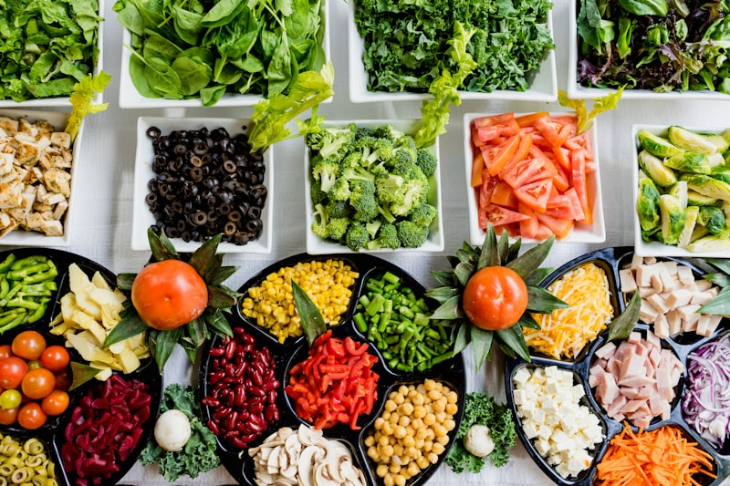

You have probably heard that fiber feeds your gut bacteria. What receives far less attention is a strange, quiet form of carbohydrate that behaves like fiber even though it is technically starch. It is called resistant starch — and it may be one of the most underrated tools for a healthier microbiome.
The twist is that you can create more of it without buying anything: cook a batch of rice, potatoes, or pasta, let it cool in the fridge, and the starch inside rearranges itself into a form your small intestine cannot digest. It travels intact to your colon, where your microbes feast on it. This article explains what resistant starch is, why your gut microbes love it, where to find it, and how to add it without triggering bloating.
What Is Resistant Starch?
Starch is a chain of glucose molecules. Most of it is broken down quickly into sugar by enzymes in your small intestine. Resistant starch escapes that process entirely. Because its structure is tightly packed or shielded, digestive enzymes cannot reach it, so it passes through to the large intestine — where colonic bacteria ferment it into short-chain fatty acids.
In practical terms, resistant starch acts like a soluble fiber. It adds fermentable fuel for your microbiome while contributing fewer usable calories than ordinary starch, which is why it has attracted attention in metabolic research.
"Resistant starch is the rare carbohydrate that feeds your microbes instead of your bloodstream."
The Four Types of Resistant Starch
RS1 — Physically Trapped
Found in whole grains, seeds, and legumes, where fibrous cell walls physically lock the starch away from enzymes. Milling and grinding break these walls, which is why whole intact grains behave differently from flour.
RS2 — Raw and Granular
Naturally packed starch granules found in raw potatoes, green (unripe) bananas, and high-amylose corn. Cooking gelatinizes them, which destroys this resistance — the reason a raw potato and a baked one are not nutritionally identical.
RS3 — Retrograded
This is the star of the show. When cooked starch cools, its molecules re-crystallize into a tighter structure that resists digestion. This is why cooled rice, cooled potatoes, and chilled pasta contain more resistant starch than the same foods served hot.
RS4 — Chemically Modified
Commercially produced starches used in some processed foods and supplements. They resist digestion by design, but they are manufactured rather than whole-food.
Why Your Microbes Love It: Butyrate
When resistant starch reaches the colon, bacteria ferment it into short-chain fatty acids, especially butyrate. Butyrate is the preferred fuel for the cells lining your colon, and it plays a role in maintaining the gut barrier, moderating inflammation, and keeping the intestinal environment slightly acidic — conditions that favor beneficial microbes.
Many people find that a steady supply of fermentable fiber, resistant starch included, supports regularity and a calmer gut over time. The keyword is steady: sudden large doses tend to backfire.
Best Whole-Food Sources
- Cooked-and-cooled white or brown rice — chill overnight for the biggest RS3 boost.
- Cooled boiled potatoes and potato salad — cooked, chilled new potatoes are a classic source.
- Chilled pasta — cooling after cooking raises its resistant starch content.
- Green (unripe) bananas and green banana flour — rich in RS2.
- Oats, barley, and cooked-then-cooled legumes — a mix of RS1 and RS3.
- Cooked and cooled lentils and beans — fiber and resistant starch together.
The Cook-and-Cool Trick
The simplest way to increase resistant starch in your diet is the cook-and-cool method. Cook your grains, potatoes, or pasta, refrigerate them for several hours or overnight, and eat them cold or gently reheated. The cooling period lets retrogradation happen.
Does reheating undo it?
Only partly. Gentle reheating — warming, not a rolling boil — retains much of the retrograded starch. Boiling it again for a long time can reverse some of the gain. For most people, a warm bowl of leftover rice or a baked potato reheated at moderate heat still delivers more resistant starch than freshly cooked versions.
Keep it food-safe
Always cool cooked rice and potatoes quickly and refrigerate them within about an hour, then eat within a few days. Cooled grains are a well-known food-safety concern if left at room temperature too long, so this method only works with proper refrigeration.
Going Slow: How to Start
Resistant starch is fermentable, which means it can cause gas and bloating if you add too much too fast. This is normal — it means your microbes are metabolizing it. Start small: a few spoonfuls of cooled rice or a quarter of a cooled potato, a few times a week. Increase gradually over two to four weeks as your microbiome adapts.
If you are following a low-FODMAP protocol, talk to a professional first, since some high-resistant-starch foods overlap with FODMAP triggers. If your gut is highly reactive, your tolerance may depend on which microbes currently dominate. This is one reason understanding which fibers feed which bacteria matters so much.
Resistant Starch, Blood Sugar, and Metabolism
Because resistant starch is not rapidly digested into glucose, some research suggests it produces a gentler blood-sugar response than ordinary starch — one reason cooled rice and potatoes are sometimes recommended for metabolic support. Emerging studies also hint that it may improve insulin sensitivity and appetite regulation over time, though the evidence is still developing and results vary by person.
For anyone working on steady energy and metabolic health, resistant starch is worth understanding alongside broader strategies like supporting blood sugar through gut health. It is not a magic bullet — it is one more lever you can pull with ordinary food.
The Bottom Line
Resistant starch is a genuinely useful and often forgotten element of a gut-friendly diet. It feeds the bacteria that produce butyrate, supports the gut barrier, and comes from everyday foods — rice, potatoes, pasta, oats, legumes, and green bananas. The trick is preparation and patience: cook, cool, and introduce it slowly.
No single food heals a microbiome, but a collection of small, consistent habits does. Pair resistant starch with diverse plant fibers, fermented foods, and a calmer nervous system, and you give your inner ecosystem what it needs to thrive.
🌿 Reclaim your vitality from within. Resistant starch feeds the good bacteria — but a thriving microbiome also benefits from a supporting ritual built on whole-food habits. Many people round out their routine with a gentle tea like Cardio Slim Tea or All Day Slimming Tea alongside fiber-rich meals. Explore natural gut health solutions →